Konfucjanizm
VS
Taoizm
Kropla chińskiej filozofii dla człowieka zachodu
Marek NineSisters Puchalski
O mnie
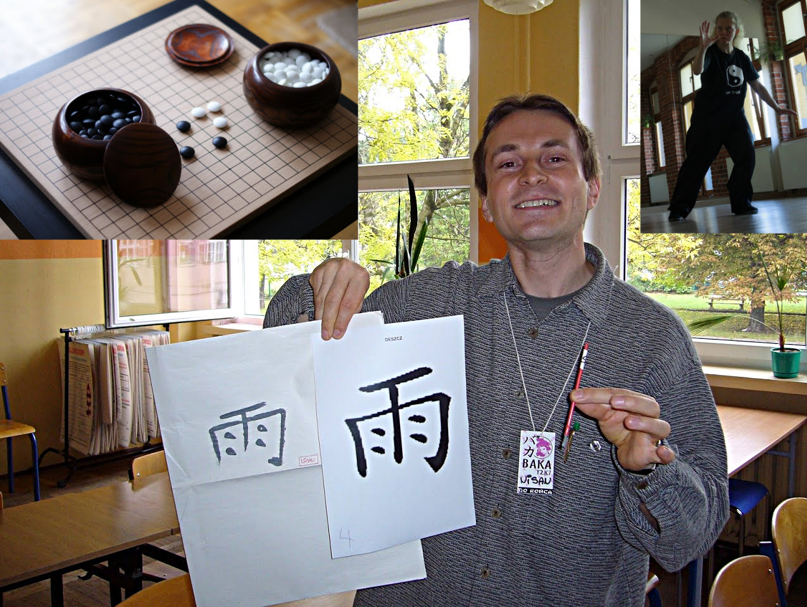Agenda
- Dlaczego?
- Historia
- Pojęcia
- Konfucjanizm
- Taoizm
Dlaczego?
Gospodarka
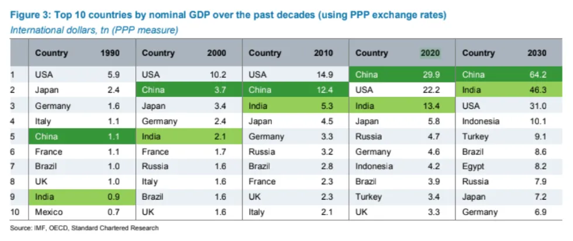https://bigthink.com/politics-current-affairs/china-worlds-biggest-economy-2020
Technologia
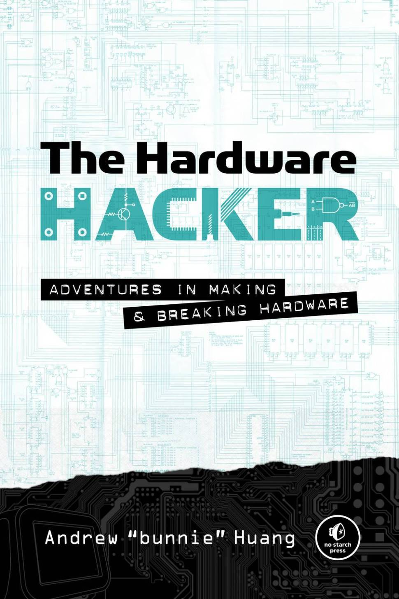Chińczyk jest w stanie w warunkach domowych zbudować telefon
(Pop)Kultura
Memy :)
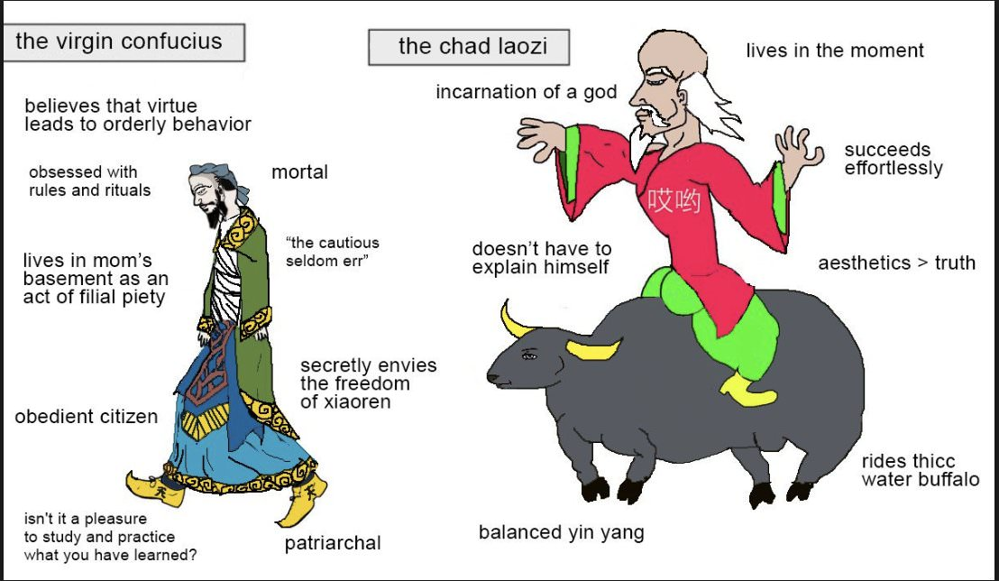Historia
Hero (2002)
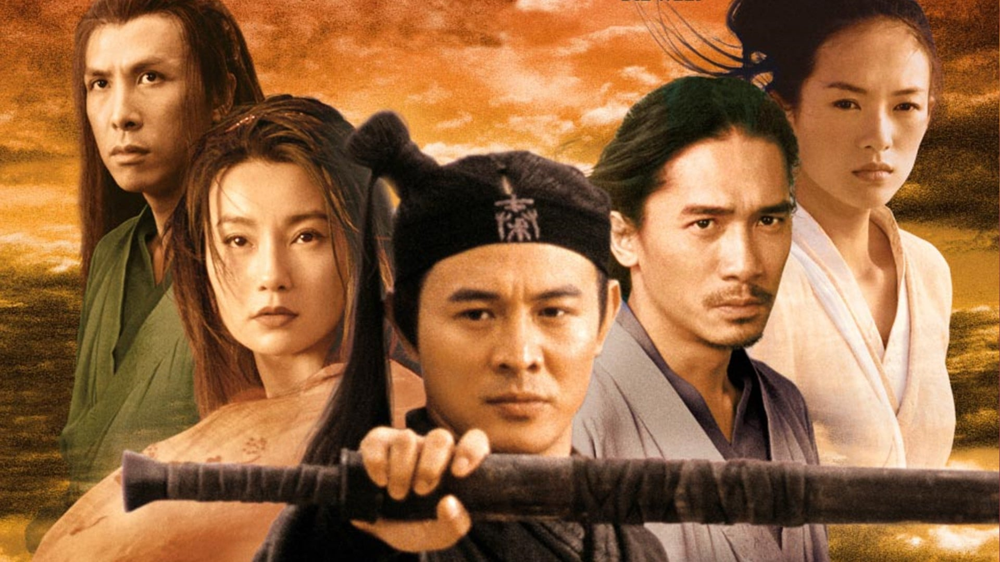Pierwszy cesarz Chin
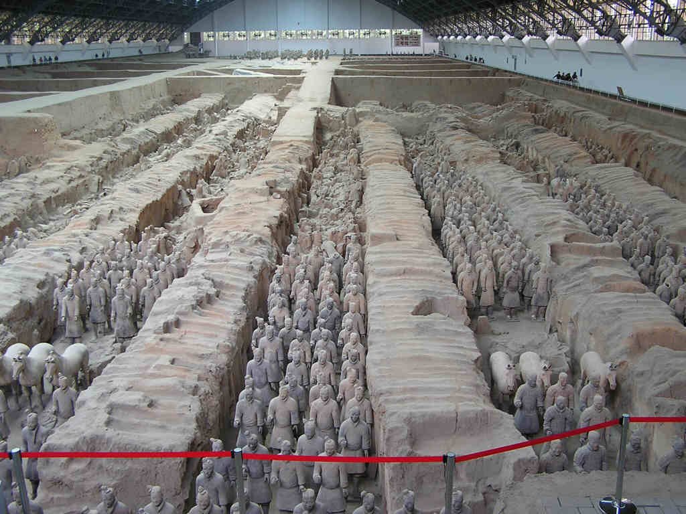Pojęcia
Co to jest?

Taijitu
Dlaczego?
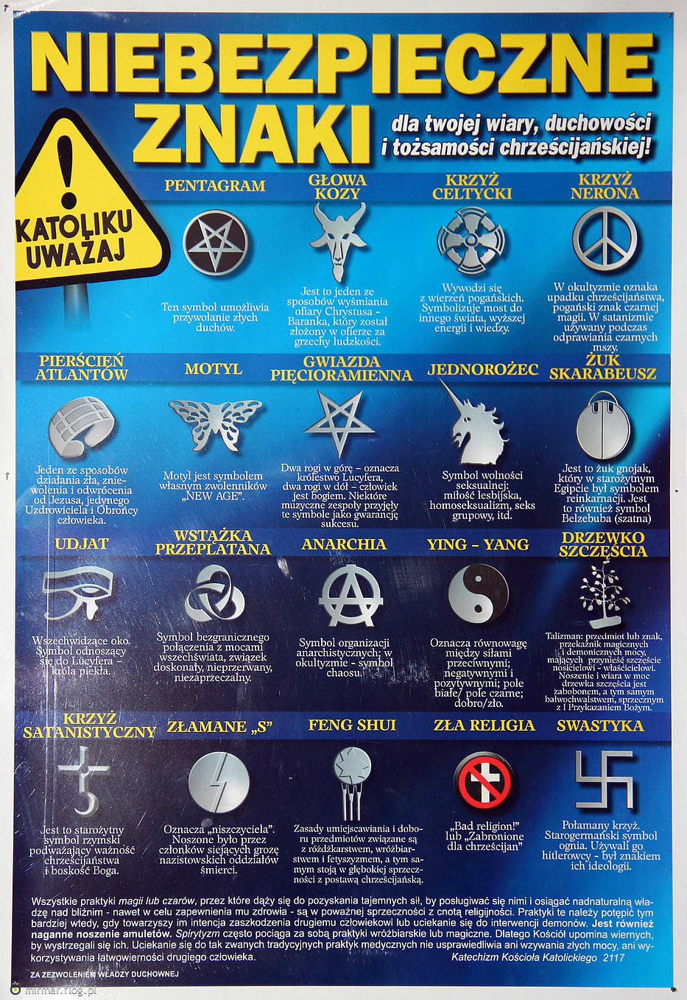Co to jest?
Enso
Co to jest?
Zen
Co to jest?
Dwie dłonie i mamy klaśnięcie. Jaki jest dźwięk jednej dłoni?
Uczeń: Czym jest Budda?
Mistrz: Trzy funty lnu.
Konfucjanizm
Kto?
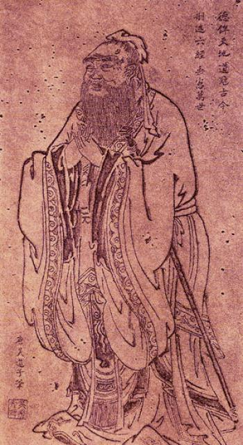Konfucjusz (Kong Fuzi; Kongzi; Mistrz Kong)
Kiedy?
Urodzony: 551 r. p.n.e.
Zmarł: 479 r. p.n.e.
Matka Konfucjusza
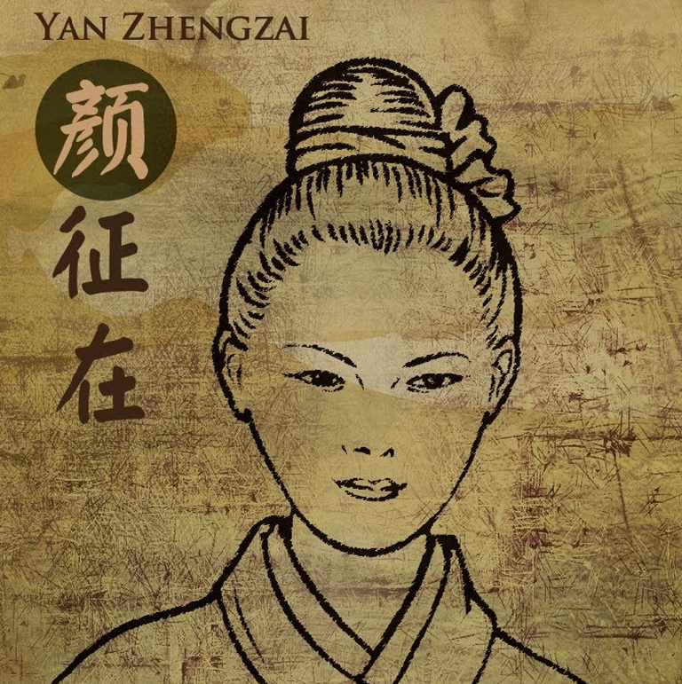Główne dzieło
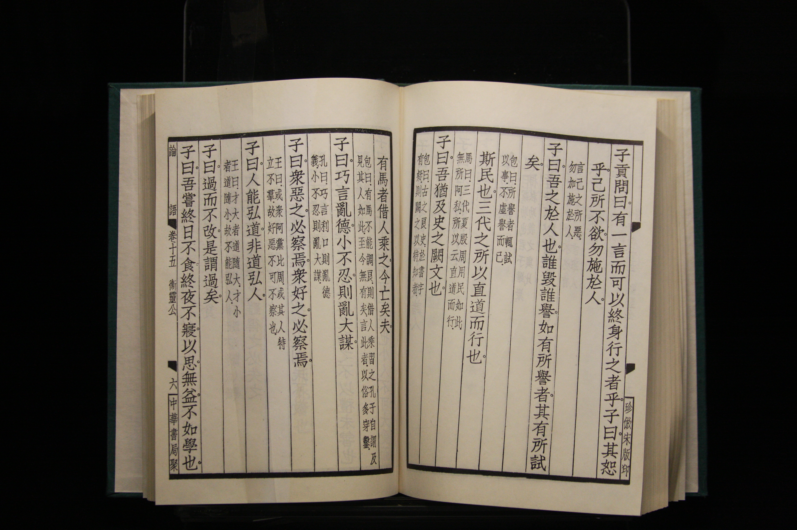Dialogi Konfucjańskie (Lunyu)
Dialogi...
czyli "nieupożądkowany zbiór notatek z wykładu". Powód:
- Śmierć Yan Yuana
- Palenie Dialogów za czasów pierwszego cesarza Qin
Pojęcia: Ren
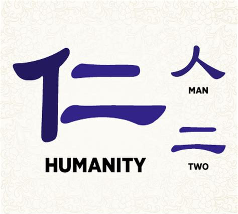Pojęcia

Rządy w kraju
“Jeśli rządzisz ludźmi przez polityczną siłę i ograniczasz ich prawem i karami, będą unikać popełniania przestępstw, lecz nie będą znać poczucia honoru i wstydu. Kiedy rządzisz nimi moralnością i prowadzisz ich dzięki li, posiądą poczucie honoru i wstydu, i będą z siebie czynić dobrze.” [1]
Rektyfikacja nazw
Zhengming to nie tylko porządkowanie rzeczy zgodnie z nazwą, to znaczy prawdziwą naturą, lecz także wprowadzenie racjonalizmu we wszystkie procedury instytucjonalne. [1]
Taoizm
Kto?
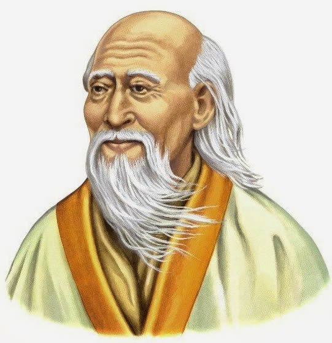Laozi (Lao Tzu; Stary Mistrz; Stary Chłopiec)
Kiedy?
Trudno powiedzieć. Jedni: VI w p.n.e. Inni: IV w. p.n.e. Jeszcze inni: Laozi w ogóle nie istniał.
Spotkanie Konfucjusza z Laozi
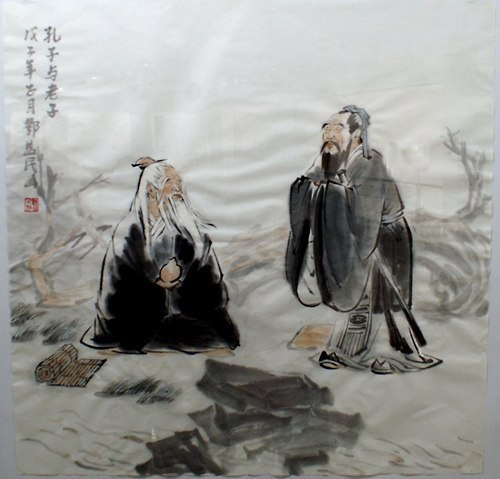Laozi opuszcza Zhou
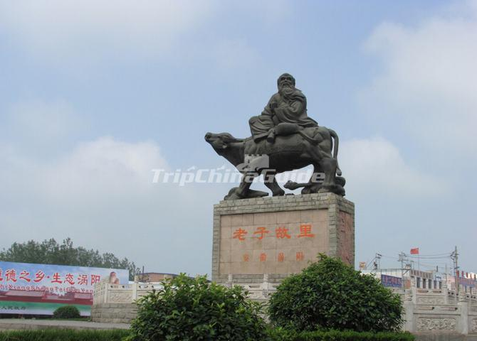Główne dzieło
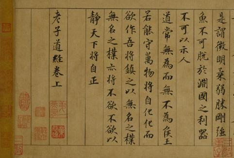Dao De Jing (Tao Te Ching; Księga drogi i cnoty)
Dao De Jing
Pojęcia: Dao
Pojęcia
"Ucieczka" w teraźniejszość
Kim jesteś?
Podsumowanie
Konfucjanizm i Taoizm
Bibliografia
- Wielcy myśliciele wschodu, Ian P. McGreal, Warszawa 1997
- Taozim, Wit Jaworski i inni, Kraków 1988
- Nowe Dialogi konfucjańskie. Próba rekonstrukcji, Qian Ning, 2014
Dziękuję!
Marek NineSisters Puchalski @marek_devsec
https://marpuch.github.io/China